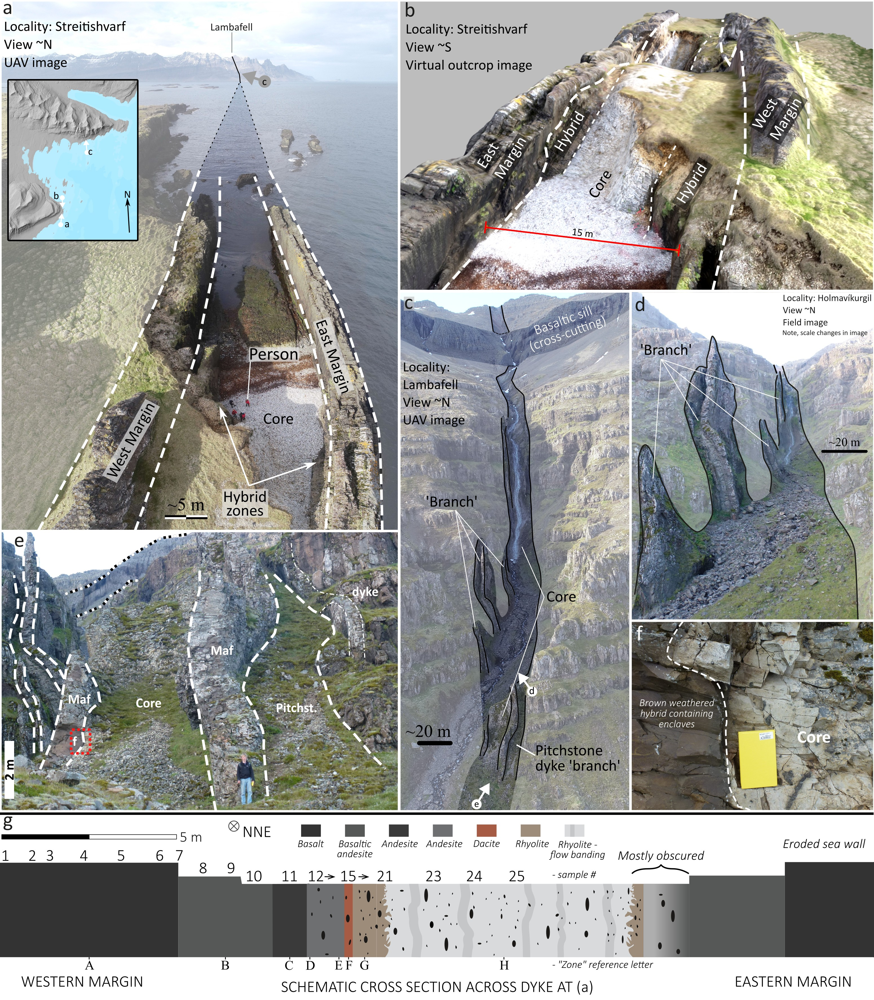

The Streitishvarf composite dyke in eastern Iceland preserves a well-exposed record of progressive magma mixing between mafic and silicic magmas. Field, petrographic, and whole-rock geochemical data reveal a series of discrete zones, from basaltic margins through hybrid andesitic–dacitic zones to an enclave-bearing rhyolitic core, each representing a separate stage of magma mixing. These zones are sharply bounded and chemically distinct, indicating that mixing occurred in stages prior to emplacement. Enclave morphologies, crystal textures, and crystal zoning patterns suggest variable degrees of mingling and thermal equilibration, with hybridization progressing over time. The structure of the dyke and its subsidiary branches records how magma propagated through the crust, exploiting early feeder pathways before stabilizing into a composite intrusion. Streitishvarf thus captures a record of the internal evolution of a magma mixing system: a series of partially mixed zones, preserving evidence of their origins, interactions, and timing, frozen mid-process. This study demonstrates that magma mixing can occur as a series of episodic but discrete events, and is a process that does not require a homogenized mixed magma body. Thus, the Streitishvarf dyke provides a cross-sectional snapshot of a hybridization process frozen mid-transition. As such, it offers a valuable case study for understanding hybrid dyke formation, evolution of crustally stored magma and silicic melt mobilization in rift settings.
Guppy and Hawkes 1925; Gunn and Watkins 1969; Eiriksson et al. 2011;
Askew et al. 2026